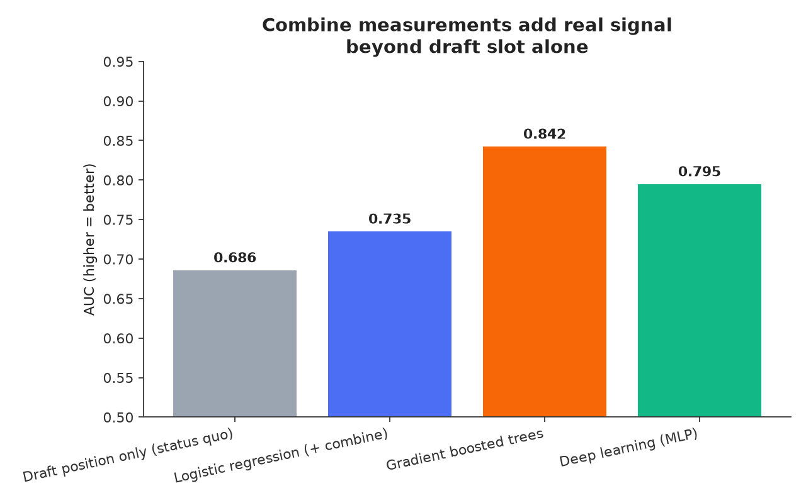
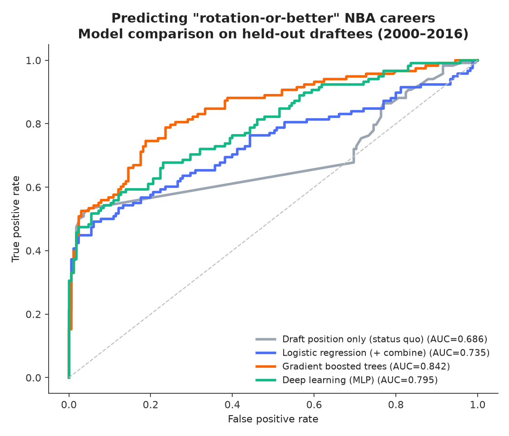
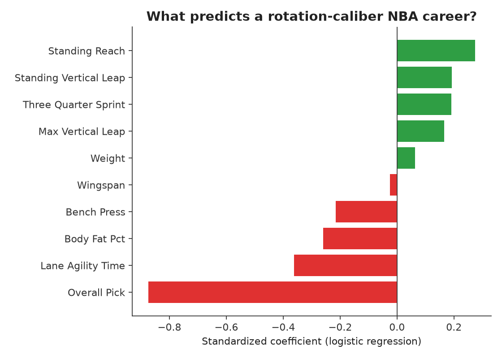

The problem
NBA front offices invest heavily in the annual scouting combine — physical testing, agility drills, shooting workouts — for every draft-eligible prospect. But most public and internal draft evaluation still leans overwhelmingly on draft position as the implicit forecast of a player's career, even though draft slot is itself a noisy human judgment made months before the player has taken an NBA rep. This project asks: how much signal is actually hiding in the combine numbers themselves, and is it strong enough to justify a decision-support product for scouting staff?
What I built
Using the NBA Database (Kaggle, wyattowalsh) — a 2.2GB SQLite database of every NBA game, draft combine test, and play-by-play event since the league's founding — I engineered a full outcome-labeling pipeline (the dataset has no ready-made "career games played" field, so I reconstructed it from 13.6M play-by-play rows by joining every event a player appears in as shooter, passer, rebounder, or substitute across their whole career), then trained four models to predict whether a drafted player becomes at least a rotation-caliber player (100+ career games), using only information available at draft time: combine measurements (height, wingspan, vertical leap, sprint/agility times, body fat, bench press) and draft position.
Model results
The core product question — "does combine testing add value beyond the pick number teams already know?" — has a clear answer: yes. A gradient-boosted model using combine data lifts prediction accuracy from 0.686 AUC (draft position alone) to 0.842 AUC. Interestingly, the deep learning MLP (0.795) beats the linear baseline but loses to gradient boosting — a realistic and important finding, since this dataset (~1,130 training rows) is simply too small for a neural net's extra capacity to pay off over a well-tuned tree ensemble. That tradeoff itself is a real product decision, not just a modeling footnote.



Beyond draft slot, standing reach, vertical leap and sprint speed are the strongest positive signals; higher body fat and slower lane agility are the strongest negative signals — consistent with what scouts already believe qualitatively, now quantified.
Player explorer
Explore real predictions: known outcomes for players drafted 2000–2016 (enough time to know how their career actually played out), current unproven prospects (2019–2023), and the two most interesting failure modes for any evaluation product — hidden gems the model would have caught, and hyped picks it would have flagged as risky. Click any row to open its Combine Grade Report Card — the MVP feature from the PRD cut below: a 0-100 grade from the gradient-boosted model plus the top 5 factors driving it, in plain language.
| Player | Combine yr | Pos | Pick | Model prob. rotation+ | Combine grade | Actual career games |
|---|
Click any row to open its Combine Grade Report Card.
PRD-lite: Draft Signal
Problem
Scouting departments score dozens of combine metrics per prospect but have no systematic way to weigh them against historical outcomes — evaluation stays qualitative and inconsistent across scouts, and combine testing spend is hard to justify without a measurable return.
User segment
Primary: NBA front-office/scouting analytics staff preparing draft boards. Secondary: player-development staff who use career-trajectory risk to plan development investment for recently drafted players.
Solution options considered
- Rule-based scorecard — simple weighted thresholds on 2-3 combine metrics. Fast to ship, fully transparent, but leaves most of the predictive signal (0.69 → 0.84 AUC gap) on the table.
- Interpretable baseline (logistic regression) — every coefficient is explainable to a scout in one sentence; 0.735 AUC, a real but modest lift over the status quo.
- Gradient-boosted ensemble — best accuracy (0.842 AUC), captures non-linear interactions between measurements (e.g., height only matters combined with a certain wingspan), at some cost to interpretability.
- Deep learning trajectory model — best long-term potential if extended with season-by-season performance sequences, but underperforms gradient boosting today because the labeled dataset is small; the right bet only once more seasons of tracking data are folded in.
MVP cut
Ship the gradient-boosted model behind a simple "combine grade" score (0-100) presented alongside the existing scouting report, with the top 5 driving factors surfaced in plain language for each prospect. Hold the deep learning model as a v2 bet gated on collecting more longitudinal tracking data. Explicitly flag low-confidence predictions for prospects who skip parts of the combine (a real, growing failure mode: several of the most hyped recent prospects — including consensus #1 picks — opt out of athletic testing entirely, which forces the model to fall back toward pick order alone for exactly the players evaluators care about most).
Metric tree
- North star: draft-pick surplus value (career win-shares delivered relative to draft slot expectation)
- Model health: AUC and Brier score on each new draft class, refreshed annually as outcomes mature
- Adoption: % of scouting reports where staff cite the combine grade in their final recommendation
- Trust/guardrail: rate of high-confidence predictions overturned by scouts, tracked to catch model drift or blind spots
Known limitations
- Career outcome labels were reconstructed from play-by-play appearance data (the dataset has no direct "career games" field) — a reasonable proxy but not an official box-score count.
- Training set restricted to 2000–2016 combine classes so careers have had time to mature; 2017+ prospects are shown as live, still-developing predictions, not validated outcomes.
- Elite prospects increasingly skip combine testing, which silently degrades the model back toward pick-order for exactly the players a team most wants a second opinion on — the biggest product risk to solve next.